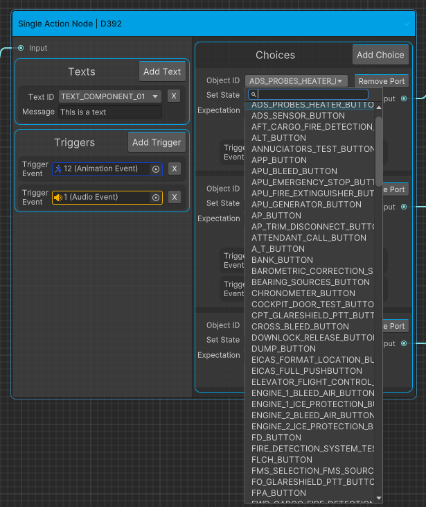
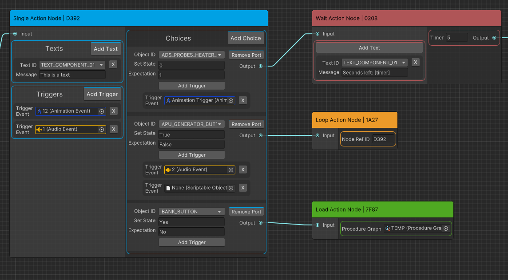
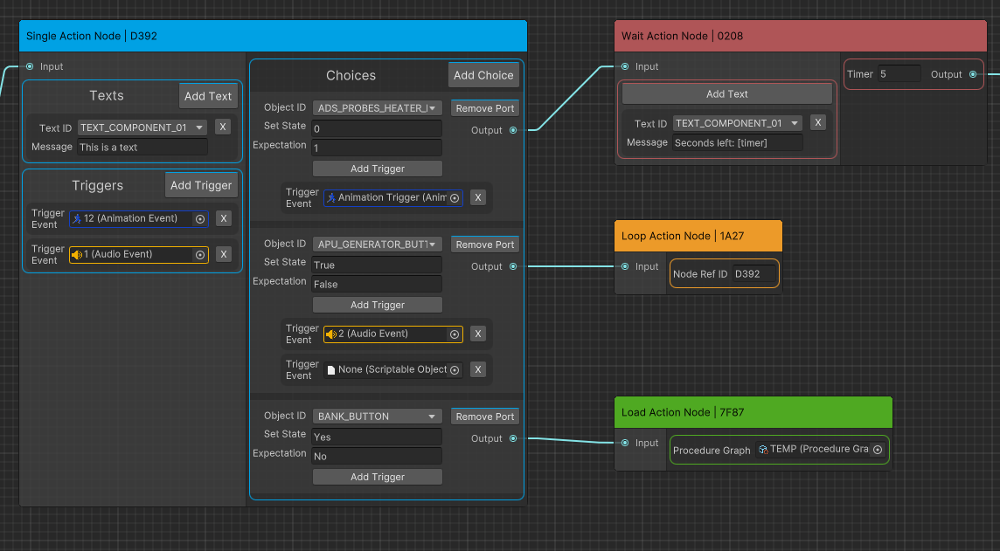

Macadamia

During my internship at the Royal Dutch Airlines (KLM) I was tasked with reworking the graph system used for storing cockpit procedure actions, this graph system is named Macadamia. There was a basic setup of the graph system in place when I began, but it needed a big upgrade. During the approximately 5 weeks I worked on Macadamia I learned the ins and outs of the Unity Graph Sytem. I was responsible for designing and developing Macadamia's save system, data formatting and user interface. The user interface featured customizable and adaptive element coloring and searchable enum fields.
Sadly I cannot go into any technical details, as it's under a Non Disclosure Agreement (NDA).
More media
 
